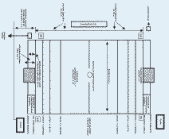
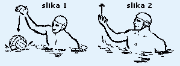
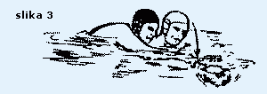
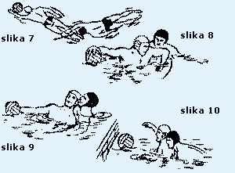
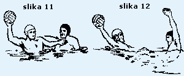
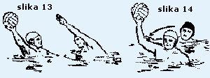
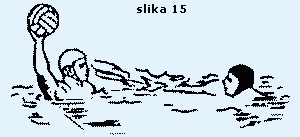
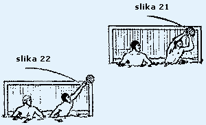
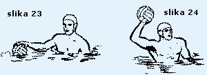

Vaterpolo pravila
Ovo su slu¾bena vaterpolo pravila donesena od strane F.I.N.A.-e 1998., uz dodatak sa SP Fukuoka 2001.
WP 01 Igrali¹te i oprema:
WP 1.1 Organizator je odgovoran za ispravne mjere i oznake igrali¹ta i mora osigurati sve propisane naprave i opremu.
WP 1.2 Nacrt i oznake na igrali¹tu, kada utakmicu sude dva suca, moraju biti
prema sljedeæoj shemi:

{kind=link}
WP 1.3 Kada utakmicu sudi jedan sudac mora se kretati na istoj strani gdje je zapisnièki stol, a gol suci moraju zauzeti mjesto na suprotnoj strani.
WP 1.4 Razmak izmeðu gol crta ne mo¾e biti manji od 20 m, niti veæi od 30 m. ©irina igrali¹ta ne mo¾e biti manja od 10 m, niti veæa od 20 m. Udaljenost crte igrali¹ta mora biti 0,30 m iza gol crte na svakoj strani. Minimalna udaljenost od zida bazena iznosi 1,66 m.
WP 1.5 Za FINA takmièenja dimenzija igrali¹ta, dubina i temperatura vode kao i rasvjeta moraju biti kako je predviðeno u FR 7.2, FR 7.3, FR 7.4 i FR 8.3.
FR 7.2. Igrali¹te za mu¹karce: udaljenost izmeðu odgovarajuæih gol crta mora biti 30 m. ©irina mora biti 20 m. Dubina vode ne smije nigdje biti manja od 1,80 m, a preporuèa se 2,00 m.
FR 7.3. Igrali¹te za ¾ene: za utakmice koje igraju ¾ene dimenzije igrali¹ta moraju biti 25 x 17 m. Dubina vode ne smije biti manja od 1,80 m, a preporuèljiva je 2,00 m.
FR 7.4. Temperatura vode mora biti 26 +/- 1 °C.
FR 7.5. Rasvjeta ne smije biti manja od 600 luxa.
FR 7.6. Odstupanja od FR 7.2 i 7.3 su dozvoljena odlukom Saveza koji rukovodi takmièenjem.
FR 8.3. Za Olimpijske igre, Svjetska prvenstva i FINA takmièenja rasvjeta ne smije biti manja od 1.500 luxa.
WP 1.6 Vidljive oznake moraju biti postavljene na obje strane igrali¹ta a oznaèavaju sljedeæe:
- bijele oznake - gol crta i polovina igrali¹ta
- crvene oznake - crta 2 m
- ¾ute oznake - crta 4 m
- zelene oznake - crta 7 m
WP 1.7 Crvena oznaka mora biti na svakom kraju igrali¹ta, 2 metra od kuta na suprotnoj strani od zapisnièkog stola, da oznaèava mjesto za ponovni ulaz igraèa u igru.
WP 1.8 Mora se osigurati dovoljno prostora da se omoguæi sucima slobodno kretanje od jednog do drugog kraja igrali¹ta. Potrebno je osigurati prostor i kod gol crta za gol suce.
WP 1.9 Tajnik (zapisnièar) mora imati odvojene bijelu, plavu i crvenu zastavicu, svaka velièine 0,35 x 0,20 m.
WP 02 Golovi:
WP 2.1 Dvije stative i greda tvrde konstrukcije, pravokutnog oblika, velièine 0,075 m na strani prema igrali¹tu, obojene bijelo, moraju biti smje¹tene na gol crtama na krajevima igrali¹ta, jednako udaljene od aut-linija i najmanje 0,30 m ispred krajnjih crta igrali¹ta.
WP 2.2 Unutra¹nji razmak stativa mora biti 3,00 m. Kada je dubina vode 1,50 m ili vi¹e, donja strana grede mora biti 0,90 m iznad povr¹ine vode. Kada je dubina vode manja od 1,50 m, donja strana grede mora biti 2,40 m od dna bazena.
WP 2.3 Zategnute mre¾e moraju biti sigurno prièvr¹æene za stative i gredu i moraju zatvarati cijeli gol ostavljajuæi razmak iza gol crta ne manji od 0,30 m.
WP 03 Lopta:
WP 3.1 Lopta mora biti okrugla sa zraènom komorom koja ima samozatvarajuæi ventil. Mora biti nepromoèiva, bez vanjskih ¹avova, bez premaza masti ili sliènih smicalica.
WP 3.2 Te¾ina lopte mora biti od 400 do 450 grama.
WP 3.3 Za mu¹ki vaterpolo obujam lopte mora biti od 0,68 do 0,71 m, a pritisak u lopti od 90 do 97 kPa (13 - 14 psi).
WP 3.4 Za ¾enski vaterpolo obujam lopte mora biti od 0,65 do 0,67, a pritisak u lopti od 83 do 90 kPa (12 - 13 kPa).
WP 04 Kapice:
WP 4.1 Kapice moraju biti razlièite boje, osim potpuno crvene, uz odobrenje
sudaca, ali takoðer razlièite od boje lopte. Ekipa mo¾e zatra¾iti od sudaca
da stave bijele ili plave kapice. Golmani moraju nositi crvene kapice.
Kapice moraju biti vezane konopcem ispod brade, a ako igraè izgubi svoju kapicu
za vrijeme igre, mora je zamijeniti kod prvog prikladnog prekida igre kada
je njegova ekipa u posjedu lopte.
WP 4.2 Za Olimpijske igre, Svjetska prvenstva i ostala FINA takmièenja kapice moraju imati savitljiv ¹titnik za u¹i. Preporuèuje se da se takve kapice upotrebljavaju za sva ostala takmièenja. ©titnici za u¹i moraju biti iste boje kao kapice, s tim da vratar smije imati crvene ¹titnike.
WP 4.3 Kapice moraju imati brojeve s obje strane, visine 0,10 m. Golman nosi kapicu s brojem 1, a ostale kapice imaju brojeve od 2 do 13. Zamjena vratara mora nositi vratarsku kapicu. Ni jedan igraè ne smije promijeniti svoj broj kapice za vrijeme igre, osim sa dozvolom suca i najavom zapisnièaru.
WP 4.4 Za meðunarodne utakmice kapice moraju na prednjoj strani imati meðunarodnu slovnu oznaku (tri slova) i smiju imati nacionalnu zastavu. Visina slovne oznake ne smije biti manja od 0,06 m.
WP 05 Ekipe i zamjene:
WP 5.1 Svaka ekipa sastoji se od 7 igraèa, od kojih 1 mora biti vratar koji
nosi vratarsku kapicu, i ne vi¹e od 6 rezervnih igraèa koji se mogu prema
potrebi zamjenjivati.
Od ekipe koja igra sa manje od 7 igraèa ne smije se zahtijevati da ima vratara.
WP 5.2 Rezervni igraèi, zajedno sa trenerima i slu¾benim osobama ekipa moraju zajedno slijediti na klupi i ne smiju napu¹tati klupu od poèetka igre, osim izmeðu èetvrtina. Ekipe moraju promijeniti strane i klupe u poluvremenu i prije poèetka nastavka prvog produ¾etka. Obje klupe su smje¹tene na suprotnoj strani od zapisnièkog stola.
WP 5.3 Kapetani moraju igrati i oni su odgovorni za dobro pona¹anje i disciplinu ekipe.
WP 5.4 Igraèi moraju nositi neprozirne kupaæe gaæice ili kostime s posebnim dodatkom. Prije ulaska u igru moraju odstraniti sve predmete koji mogu prouzrokovati povrede.
WP 5.5 Igraèi ne smiju biti namazani po tijelu ma¹æu ili nekim sliènim sredstvom.
Ako sudac prije poèetka utvrdi da je upotrebljavano to sredstvo, mora narediti
da se isto odmah odstrani. Poèetak utakmice se ne smije odlo¾iti da bi se
sredstvo odstranilo.
Ako se ovaj prekr¹aj utvrdi poslije poèetka igre, taj igraè mora biti iskljuèen
do kraja utakmice, a zamjena mo¾e uæi odmah u igru na mjestu za ulazak kod
vlastite gol crte.
WP 5.6 U svako vrijeme tokom igre igraè smije biti zamijenjen nakon ¹to je napustio igrali¹te na mjestu za ponovni ulazak kod vlastite gol crte. Zamjena smije uæi u igrali¹te sa mjesta za ponovni ulazak èim igraè vidljivo dopliva na povr¹inu vode u prostoru za ponovni ulazak.
WP 5.7 Ako drugaèije nije predviðeno pravilima, igraè smije biti zamijenjen jedino:
a) za vrijeme odmora izmeðu èetvrtina i bilo kojeg nastavka produ¾etka
b) nakon postignutog pogotka
c) za vrijeme time out-a
d) ako krvari ili je povrijeðen
WP 5.8 Zamjena mora biti spremna uæi u igru bez odugovlaèenja. Ukoliko zamjena nije spremna, igra æe se nastaviti bez njega, a on mo¾e uæi u svako vrijeme sa mjesta za ponovni ulazak kod vlastite crte gola.
WP 5.9 Vratar koji je zamjenjen, ukoliko se vrati u igru, smije igrati na bilo kojem mjestu.
WP 5.10 Ukoliko se vratar mora povuæi iz igre zbog zdravstvenih razloga, suci moraju dozvoliti da ga odmah zamijeni jedan od igraèa, koji æe staviti vratarsku kapicu.
WP 06 Slu¾bene osobe:
WP 6.1 Za FINA takmièenja slu¾bene osobe su dva suca, dva gol suca, mjeritelji
vremena i zapisnièari, svaki sa sljedeæim pravima i du¾nostima.
Navedene slu¾bene osobe trebaju biti prisutne uvijek kada je moguæe i za ostala
takmièenja osim, na utakmicama koje sude dvojica sudaca bez gol sudaca. Tada
suci moraju preuzeti njihova prava i du¾nosti (bez navedenih davanja specifiènih
znakova) kao ¹to stoji u WP 8.2 za gol suce.
[Napomena]: Ovisno o stupnju va¾nosti, utakmice mogu voditi èetiri do osam
slu¾benih osoba, kako slijedi:
(a) Suci i gol suci: Dvojica sudaca i dvojica gol sudaca ili dvojica sudaca bez gol sudaca ili jedan sudac i dvojica gol sudaca.
(b) Mjeritelji vremena i zapisnièari:
- Sa jednim mjeriteljem vremena i jednim zapisnièarom:
Mjeritelj vremena mora mjeriti vrijeme neprekidnog posjeda lopte za svaku ekipu kako je opisano WP 20.17. Zapisnièar mora mjeriti toèno vrijeme trajanja èiste igre, "time out-a" i odmore izmeðu pojedinih èetvrtina. Takoðer mora mjeriti vrijeme trajanja iskljuèenja igraèa koji su iskljuèeni iz igre prema pravilima. Mora voditi zapisnik utakmice kao ¹to je navedeno u WP 10.1. - Sa dva mjeritelja vremena i jednim zapisnièarom:
Mjeritelj vremena br.1 mora mjeriti toèno vrijeme trajanja èiste igre i odmore izmeðu pojedinih èetvrtina. Mjeritelj vremena br. 2 mora mjeriti vrijeme neprekidnog posjeda lopte, za svaku ekipu, kako je opisano u WP 20.17. Zapisnièar treba voditi zapisnik utakmice i obavljati sve du¾nosti navedene u WP 10.1. - Sa dva mjeritelja vremena i dva zapisnièara:
Mjeritelj vremena br.1 mora mjeriti toèno vrijeme trajanja èiste igre, "time out-a" i odmore izmeðu pojedinih èetvrtina. Mjeritelj vremena br. 2 mora mjeriti vrijeme neprekidnog posjeda lopte za svaku ekipu kako je opisano u WP 20.17. Zapisnièar br. 1 mora voditi zapisnik utakmice kao ¹to je navedeno u WP 10.1. (a). Zapisnièar br. 2 mora obavljati du¾nosti navedene u WP 10.1 (b),(c) i (d), a koje se odnose na nepravilan ponovni ulazak iskljuèenog igraèa, nepravilan ulazak zamjene, iskljuèenje igraèa i treæu osobnu gre¹ku.
WP 07 Suci:
WP 7.1 Suci moraju imati potpunu kontrolu igre. Njihova nadle¾nost nad igraèima mora trajati sve vrijeme dok se oni i igraèi nalaze na plivali¹tu. Sve odluke sudaca po praktiènim pitanjima moraju biti konaène i njihova tumaèenja pravila moraju biti obavezna za vrijeme utakmice. Suci ne smiju pretpostaviti stvarne dogaðaje, ali moraju tumaèiti ono ¹to je uoèeno na naèin kako najbolje znaju.
WP 7.2 Suci moraju dati znak zvi¾daljkom za poèetak i ponovni poèetak igre, dosuðivati pogotke, vratarska bacanja, izvoðenja kornera bez obzira da li su gol suci dali znak ili ne), neutralna bacanja i prekr¹aje pravila igre. Sudaca smije promijeniti svoju odluku, pod uvjetom da to uèini prije nastavka igre.
WP 7.3 Suci moraju propustiti dosuditi pojedini prekr¹aj, ako bi to po njihovom
mi¹ljenju bila prednost ekipi koja je prekr¹aj uèinila. Suci ne smiju dosuditi
obièan prekr¹aj kada jo¹ postoji moguænost igranja loptom.
[Napomena: Suci moraju ovaj princip primjenjivati u punoj mjeri. Na primjer,
ne smiju dosuditi prekr¹aj u korist igraèa koji je u posjedu lopte i napreduje
prema protivnièkom golu, jer se to smatra davanjem prednosti ekipi koja je
taj prekr¹aj uèinila.]
WP 7.4 Suci imaju ovla¹tenje svakog igraèa iskljuèiti iz igre u skladu sa odgovarajuæim pravilom. Ukoliko igraè odbije izaæi iz igre, igra se mora prekinuti.
WP 7.5 Suci imaju ovla¹tenje udaljiti svakog igraèa, zamjenu, gledatelja ili slu¾benu osobu sa prostora bazena ako pona¹anje istih onemoguæava izvr¹enje njihovih obaveza na pravilan i nepristran naèin.
WP 7.6 Suci imaju ovla¹tenje zaustaviti utakmicu u bilo koje vrijeme, ako po njihovom mi¹ljenju pona¹anje igraèa, gledatelja ili druge okolnosti ne dozvoljavaju da se utakmica pravilno zavr¹i. Ako je utakmica prekinuta, suci moraju izvijestiti nadle¾ni organ o svom postupku.
WP 08 Gol suci:
WP 8.1 Gol suci moraju zauzeti mjesta na strani zapisnièkog stola na gol crti, na krajevima igrali¹ta.
WP 8.2 Du¾nosti gol sudaca su:
(a) dati znak podizanjem ruke u okomitom polo¾aju kada su igraèi pravilno zauzeli mjesto na gol crti na poèetku èetvrtine
(b) dati znak podizanjem obje ruke u okomitom polo¾aju za nepravilan poèetak ili ponovni poèetak
(c) pokazujuæi rukom u vodoravnom polo¾aju u pravcu napada za vratarsko bacanje
(d) pokazujuæi rukom u vodoravnom polo¾aju u pravcu napada za izvoðenje kornera
(e) dati znak podizanjem i ukr¹tanjem obje ruke u okomiti polo¾aj za pogodak
(f) dati znak podizanjem obje ruke u okomiti polo¾aj za nepravilan ulazak iskljuèenog igraèa ili njegove zamjene.
WP 8.3 Svaki gol sudac mora biti snabdjeven sa dovoljnim brojem lopti i kada lopta kojom se igra napusti igrali¹te, odmah mora drugu loptu dodati vrataru (za vratarsko bacanje) ili najbli¾em igraèu ekipe u napadu (za izvoðenje kornera). Isto mora uèiniti i po nalogu suca.
WP 09 Mjeritelji vremena:
WP 9.1 Du¾nosti mjeritelja vremena su:
(a) mjeriti toèno vrijeme èistog trajanja igre, "time out-a" i odmora izmeðu èetvrtina
(b) mjeriti vrijeme neprekidnog posjeda lopte za svaku ekipu
(c) mjeriti vrijeme trajanja iskljuèenog igraèa u skladu sa pravilima kao i objaviti vrijeme ponovnog ulaska iskljuèenih igraèa ili njihovih zamjena
(d) razgovijetno objaviti poèetak zadnjeg minuta utakmice i zadnjeg minuta drugog nastavka produ¾etka
(e) zvi¾daljkom oznaèiti 45 sekundi i kraj svakog "time out-a".
WP 9.2 Mjeritelj vremena mora dati znak zvi¾daljkom (ili drugim ureðajem posebno jakog zvuka koji se odmah prepoznaje) za zavr¹etak svake èetvrtine nezavisno od sudaca. Njegov znak neposredno prekida igru, osim u sluèajevima:
(a) kada sudac istovremeno dosudi kazneni udarac. Tada se mora izvesti kazneni udarac prema pravilima
(b) kada je lopta u letu prema golu i prelazi gol crtu. Tada se mora priznati pogodak.
WP 10 Zapisnièari:
WP 10.1 Du¾nosti zapisnièara su:
(a) voditi zapisnik utakmice, ¹to ukljuèuje igraèe, rezultat, time out, sve prekr¹aje za iskljuèenje, prekr¹aje za kaznene udarce, kao i osobne gre¹ke dosuðene svakom igraèu
(b) kontrolirati vrijeme trajanja iskljuèenja igraèa i davati znak za istek vremena iskljuèenja dizanjem odgovarajuæe zastavice osim kada sudac mora dati znak za ponovni ulazak iskljuèenom igraèu ili zamjeni kada njegova ekipa doðe u posjed lopte
(c) davati znak crvenom zastavicom i zvi¾daljkom za svaki nepravilan ponovni ulazak iskljuèenog igraèa ili nepravilan ulazak zamjene (ukljuèujuæi i podizanje ruku gol suca za nepravilan ponovni ulazak ili ulazak) èiji znak mora odmah zaustaviti igru
(d) davati znak, bez odlaganja, za treæu osobnu gre¹ku kako slijedi:
(I) sa crvenom zastavicom ako je treæa osobna gre¹ka
(II) sa crvenom zastavicom i zvi¾daljkom ako je prekr¹aj za kazneni udarac treæa osobna gre¹ka.
WP 11 Trajanje igre:
WP 11.1 Trajanje igre mora biti 4 èetvrtine po 7 minuta èiste igre.
Vrijeme poèetka igre mora biti trenutak kada igraè dotakne loptu na poèetku
svake èetvrtine.
Kod svih znakova za prekid, mjerni sat mora se zaustaviti dok lopta nije vraæena
u igru, napu¹tanjem ruke igraèa koji izvodi odgovarajuæe bacanje ili kada
loptu dotakne igraè nakon neutralnog bacanja.
WP 11.2 Izmeðu svake èetvrtine odmor mora trajati 2 minute.
Ekipe, ukljuèujuæi igraèe, trenere, slu¾bene osobe moraju zamijeniti strane
prije poèetka treæe èetvrtine i prije prvog nastavka bilo kojeg produ¾etka.
WP 11.3 Kada je rezultat utakmice nerije¹en nakon isteka vremena u bilo kojoj
utakmici za koju je potreban odluèujuæi rezultat, mora se igrati produ¾etak
nakon odmora od 5 minuta. Igrati æe se 2 nastavka po 3 minuta èiste igre sa
prekidom od 1 minute kako bi suci promijenili strane.
Ako je rezultat na kraju dva nastavka produ¾etka nerije¹en, moraju se izvesti
kazneni udarci (èetverci) kako bi se odredio rezultat.
[Napomena: Ukoliko doðe do izvoðenja kaznenih udaraca, svaka od ekipa mora
izvesti po 5 kaznenih udaraca na protivnièki gol naizmjeniènim redom. Prva
ekipa mora izvesti svoj kazneni udarac, a onda druga ekipa izvodi svoj i tako
redom.
Ukoliko je nakon tako izvedenih udaraca rezultat nerije¹en, svaka ekipa mora
izvesti dodatne udarce naizmjenièno sve dok jedna ekipa ne postigne pogodak,
a druga pogrije¹i. Svaki udarac mora biti izveden od razlièitih igraèa ekipe.
]
P.S. U odnosu na ovo pravilo WP 11.3, u LEN udruzi je dogovoreno da i dalje
ostane na snazi staro Pravilo i to: Ako je rezultat na kraju dva nastavka
produ¾etka nerije¹en, igra se treæi nastavak do postizanja tzv. "zlatnog
gola" èime se rje¹ava pitanje pobjednika.
WP 11.4 Semafor æe pokazivati vrijeme (tj. preostalo vrijeme u odreðenoj èetvrtini).
WP 12 Prekid igre - "time out":
WP 12.1 Svaka ekipa ima pravo na 3 time out-a u svakoj utakmici. Treæi time-out
mo¾e biti zatra¾en samo u produ¾etcima. Trajanje time out-a iznosi 1 minutu.
Trener ekipe u posjedu lopte, mo¾e zatra¾iti time-out i signalizacijom rukama
u obliku slova "T". Ako je zatra¾en time-out, suci i zapisnièari,
moraju zvi¾dukom zaustaviti igru.
WP 12.2 Igru æe nastaviti ekipa koja je zadnja bila u posjedu lopte, na znak suèevog zvi¾duka, sa polovine igrali¹ta, osim u sluèajevima:
(a) ako je time-out zatra¾en prije izvoðenja kaznenog ili kornerskog udarca, to bacanje æe biti izvedeno poslije time-outa.
(b) ako je time out zatra¾en poslije postizanja pogotka, suci æe ponovo zapoèeti igru u skladu sa WP 15 (Ponovni poèetak nakon pogotka) a odmah iza toga zaustaviti igru na tra¾eni time out.
[Napomena: Semafor koji oznaèava posjedovanje lopte, nastavlja odbrojavati vrijeme od ponovnog poèetka igre, posle time out-a.]
[Dodatak: Nakon ¹to igra ponovo zapoène, na znak sudske zvi¾daljke, trajanje
odmora od jednog minuta za time-out se treba smatrati kratkim odmorom (¹to
je u stvari pola vremena od odmora izmeðu èetvrtina).
Zbog toga, ovo jednominutno trajanje se ne treba smatrati "mrtvim vremenom"
tj. istim kada se naèine prekr¹aji ispred izvoðenja slobodnog, vratarskog,
kornerskog i kaznenog udarca.
Tek kada sudac zvi¾dukom oznaèi ponovni poèetak igre, svi prekr¹aji æe se
primijeniti u skladu sa PRAVILIMA igre. Svaka brutalnost koju igraèi uèine
za vrijeme time out-a od jednog minuta, treba kazniti u skladu sa PRAVILIMA,
kada se takvi prekr¹aji dogode za vrijeme pona¹anja.]
WP 12.3 Ako trener ekipe koja je u posjedu lopte, tra¾eæi treæi ili dodatni time out, igra æe biti zaustavljena i ponovno zapoèeta od strane igraèa suprotne ekipe, koji æe izvesti slobodno bacanje sa polovine igrali¹ta.
WP 12.4 Ako trener ekipe koja nije u posjedu lopte, zatra¾i time out, igra æe biti zaustavljena a kazneni udarac (èetverac) æe biti dosuðeno suprotnoj ekipi.
WP 12.5 Na ponovno zapoèinjanje igre poslije time out-a igraèi mogu zauzeti bilo koju poziciju u igrali¹tu, izuzev pravila za izvoðenje kaznenog ili kornerskog udarca.
[Napomena. Kada je zatra¾en time-out, igraèi moraju doæi do svoje polovine igrali¹ta.]
WP 13 Poèetak igre:
WP 13.1 Kapetan ekipe æe prije poèetka utakmice, uz prisustvo sudaca, pobjedom kod bacanja novèiæa, odabrati poèetnu stranu igrali¹ta.
WP 13.2 Na poèetku svake èetvrtine igraèi moraju zauzeti mjesto na vlastitoj gol crti, na razmaku od oko 1 metra i najmanje 1 metar od stative. Vi¹e od 2 igraèa ne mogu se nalaziti unutar stativa. Niti jedan dio tijela igraèa ne smije biti ispred gol crte na vodenoj povr¹ini.
WP 13.3 Kada se suci uvjere da su ekipe spremne, sudac æe dati znak zvi¾dukom za poèetak i odmah osloboditi ili baciti loptu na liniju polovine igrali¹ta.
WP 13.4 Ako osloboðena ili baèena lopta daje oèitu prednost jednoj ekipi, sudac æe uzeti loptu i dosuditi neutralno bacanje na crti polovine igrali¹ta.
WP 14 Pogodak:
WP 14.1 Pogodak æe biti priznat kada lopta cijelim obujmom prijeðe gol crtu izmeðu stativa ispod grede.
WP 14.2 Pogodak mo¾e biti postignut sa bilo kojeg dijela igrali¹ta osim ¹to vrataru nije dozvoljeno da prijeðe ili dodirne loptu preko linije polovine igrali¹ta.
WP 14.3 Pogodak mo¾e biti postignut bilo kojim dijelom tijela osim stisnutom ¹akom. Pogodak se smije postiæi i uplivavanjem sa loptom u gol. Na poèetku ili ponovnom poèetku igre, najmanje dva igraèa (bilo koje ekipe iskljuèujuæi vratara obrambene ekipe) moraju namjerno igrati ili dodirnuti loptu osim kod izvoðenja:
- kaznenog bacanja
- slobodnog bacanja od obrambenog igraèa
- direktnog udarca iz vratarskog bacanja
- direktnog udarca dosuðenog iz slobodnog udarca dosuðenog izvan crte 7 metara.
[Napomena:Pogodak mo¾e biti postignut kada igraè odmah puca izvan linije
7m nakon ¹to je njegovoj ekipi dosuðeno slobodno bacanje izvan 7m. Igraè ne
mo¾e postiæi gol nakon ¹to je igrao loptom osim ako je loptu namjerno dotakao
drugi igraè izuzev vratara obrambene ekipe.
Ako je u vrijeme dosuðivanja prekr¹aja, lopta bli¾a ekipi koja se brani, pogodak
mo¾e biti postignut pod ovim PRAVILOM, ako se lopta bez zadr¾avanja vrati
na mjesto gdje je prekr¹aj poèinjen a udarac se odmah izvede sa te pozicije.
Pogodak se ne mo¾e postiæi pod ovim PRAVILOM, direktnim udarcem iz ponovnog
zapoèinjanja igre koja slijedi poslije:
- time out-a
- pogotka
- povrede (ukljuèujuæi i krvarenje)
- zamjene kapice
- uzimanje
- izlaska lopte iz igrali¹ta
- bilo kakvog drugog zadr¾avanja.]
WP 14.4 Pogodak mora biti priznat ako je nakon isteka 35 sekundi ili kraja
èetvrtine lopta bila u letu i u¹la u gol.
[Napomena:U smislu ovog èlana, ako lopta prijeðe gol crtu nakon odbijanja
od stative, grede, vratara ili obrambenog igraèa i/ili odbijajuæi se od vode,
pogodak se mora priznati. Ako je oznaèen kraj èetvrtine, a nakon toga je loptom,
na putanji prema golu, igrao ili je dodirnuo namjerno igraè ekipe u napadu,
pogodak se ne smije priznati.
Ako je lopta u letu prema golu, u smislu ovog èlana, a vratar ili drugi obrambeni
igraè povuèe gol prema dolje ili obrambeni igraè, osim vratara zaustavi loptu
sa dvije ruke, ili je udari ¹akom u prostoru 4 m kako bi sprijeèio postizanje
pogotka, sudac mora dosuditi kazneni udarac, ukoliko bi po njegovom mi¹ljenju,
lopta pre¹la gol crtu da nije bilo navedenog prekr¹aja.
Ako je lopta u letu prema golu, u smislu ovog èlana, i nakon dodira sa vodom
otpliva cijela preko gol crte, sudac mora priznati pogodak samo onda ako je
plivanje preko gol linije uslijedilo neposredno nakon pucanja na gol.]
WP 15 Ponovni poèetak nakon pogotka:
WP 15.1 Nakon postignutog pogotka igraèi moraju zauzeti mjesta bilo gdje
na svojoj polovini igrali¹ta. Niti jedan dio tijela igraèa na povr¹ini vode
ne smije prijeæi crtu polovine igrali¹ta.
Sudac æe zvi¾dukom dati znak za ponovni poèetak igre.
Vrijeme èiste igre æe poèeti teæi kad lopta napusti dlan igraèa ekipe koja
nije postigla pogodak.
Ponovni poèetak igre ne izveden u smislu ovog èlana mora se ponoviti.
WP 16 Vratarska bacanja:
WP 16.1 Vratarsko bacanje æe se dosuditi:
kada lopta cijelim obujmom prijeðe gol crtu, osim dijela izmeðu stativa i ispod grede, ako je zadnji igrao ili je dotakao igraè ekipe u napadu;
kada lopta cijelim obujmom prijeðe crtu izmeðu stativa, ispod grede ili dodirne stativu, gredu ili vratara obrambene ekipe, direktno iz:
- slobodnog udarca dosuðenog i izvedenog unutar 7 m
- slobodnog udarca dosuðenog izvan 7 m ne izvedenog odmah
- vratarskog bacanja ne izvedenog odmah
- izvoðenja kornera.
WP 16.2 Golmansko bacanje mora izvesti vratar obrambene ekipe sa bilo kojeg mjesta unutar prostora 2 m. U sluèaju da je vratar izvan vode, drugi obrambeni igraè mora izvesti vratarsko bacanje. Pogre¹no izvedeno vratarsko bacanje, u smislu ovog èlana, mora se ponoviti.

[Napomena: Ne smije se odugovlaèiti kod izvoðenja slobodnog bacanja, vratarskog
bacanja ili kornerskog bacanja. Bacanje se mora izvesti tako da ostali igraèi
mogu vidjeti kada lopta napusti dlan igraèa. Igraèi èesto èine pogre¹ku odugovlaèenjem
bacanja, jer previde odredbu u WP 19.4 koja dozvoljava igraèu da vodi loptu
prije dodavanja suigraèu.
Na taj naèin bacanje se mo¾e izvesti odmah i onda kada igraè ne mo¾e pronaæi
suigraèa kojem mo¾e dodati loptu. Igraèu je dozvoljeno da izvede bacanje ili
spu¹tanjem lopte iz ruke na povr¹inu vode (Slika 1) ili bacanjem u zrak (Slika
2) i tada mo¾e nastaviti s voðenjem lopte.
U oba sluèaja bacanje se mora izvesti tako da ga ostali igraèi mogu vidjeti.]
WP 17 Izvoðenje kornera:
WP 17.1 Kornersko bacanje æe se dosuditi kada lopta cijelim obujmom prijeðe gol crtu osim dijela izmeðu stativa i ispod grede, ukoliko je loptom zadnji igrao ili je dodirnuo igraè obrambene ekipe.
WP 17.2 Kornersko bacanje æe izvesti igraè ekipe u napadu sa crte 2 m na
strani izlaska lopte. Bacanje ne mora izvesti najbli¾i igraè, ali se mora
izvesti bez odugovlaèenja.
[Napomena. Naèin izvoðenja bacanja - vidi napomenu u WP 16.2.]
WP 17.3 Kod izvoðenja kornerskog bacanja ni jedan igraè ekipe u napadu ne smije biti unutar crte 2 m.
WP 17.4 Kornersko bacanje izvedeno sa pogre¹nog mjesta ili prije nego ¹to su igraèi ekipe u napadu napustili prostor 2 m mora se ponoviti.
WP 18 Neutralno bacanje:
WP 18.1 Neutralno bacanje æe se dosuditi:
(a) kada lopta na poèetku èetvrtine, po mi¹ljenju suca padne tako da daje
prednost jednoj ekipi;
(b) kada jedan ili vi¹e igraèa iz svake ekipe uèine istovremeno prekr¹aj tako
da sucima nije moguæe ocijeniti koji je igraè prvi napravio prekr¹aj;
(c) kada suci zazvi¾de u isto vrijeme, dosuðujuæi obièni prekr¹aj razlièitim
ekipama;
(d) kada igraè svake ekipe uèini te¹ki prekr¹aj istovremeno u èistoj igri
ili prekidu;
(e) kada lopta udari ili ostane na nekoj prepreci iznad igrali¹ta.
WP 18.2 Kod neutralnog bacanja sudac mora baciti loptu prema vodi na pribli¾no
istoj poziciji gdje je bio dogaðaj, na naèin da igraèi obje ekipe imaju istu
moguænost doæi u posjed lopte.
Neutralno bacanje, dosuðeno u prostoru 2 metra, mora se izvesti na crti 2
metra.
WP 18.3 Ako je kod neutralnog bacanja, po mi¹ljenju suca, lopta pala tako da daje oèitu prednost jednoj ekipi, sudac æe uzeti loptu i ponoviti bacanje.
WP 19 Slobodan udarac:
WP 19.1 Slobodan udarac ili slobodno bacanje æe biti izvedeno sa mjesta gdje
je uèinjen prekr¹aj, osim:
(a) ako je lopta dalje od gola ekipe koja se brani, slobodno bacanje æe se
izvesti sa mjesta na kome se lopta nalazi;
(b) ako je igraè u obrani uèinio prekr¹aj u prostoru od 2 metra; slobodno
bacanje æe biti izvedeno sa crte od 2 metra; suprotno mjestu prekr¹aja, ili
ako je lopta izvan prostora 2 m; sa mjesta na kome se lopta nalazi
(c) ili ako je PRAVILOM na drugi naèin propisano...
Slobodno bacanje izvedeno sa pogre¹ne pozicije, biti æe ponovo izvedeno.
WP 19.2 Sudac æe procijeniti koje je vrijeme dopu¹teno igraèu za izvoðenje slobodnog bacanja. Ono treba biti razumno, bez odugovlaèenja, ali ne treba biti u istom trenutku. Prekr¹aj je, ako igraè koji je neometan na poziciji izvoðenja, ne izvede odmah bacanje.
WP 19.3 Svaki igraè ekipe u èiju je korist dosuðeno slobodno bacanje du¾an je dodati loptu igraèu koji izvodi slobodno bacanje.
WP 19.4 Slobodno bacanje se izvodi tako da igraèi mogu vidjeti kada lopta
napu¹ta dlan igraèa koji ga izvodi. Nakon toga dozvoljeno je dr¾ati ili voditi
loptu prije dodavanja drugom igraèu. Lopta je u igri èim napusti dlan igraèa
koji izvodi slobodno bacanje.
[Napomene. Za naèin izvoðenja bacanja vidi napomenu WP 16.2]
WP 20 Obièni prekr¹aji:
WP 20.1 Obièan prekr¹aj je bilo koji od sljedeæih prekr¹aja (WP 20.2 do WP
20.18), za koji æe biti dosuðeno slobodno bacanje za protivnièku ekipu.
[Napomena: Suci moraju dosuðivati obiène prekr¹aje u smislu PRAVILA dozvoljavajuæi
ekipi u napadu da doðe do prednosti. Uz sve to suci moraju uzeti u obzir posebne
okolnosti iz WP 7.3 (prednost).]
WP 20.2 Ako igraè krene sa gol linije na poèetku èetvrtine prije znaka suca, slobodno bacanje æe biti izvedeno sa mjesta gdje se lopta nalazi, ili ako lopta nije pu¹tena u igrali¹te, sa polovine igrali¹ta.
WP 20.3 Pomagati suigraèu na poèetku èetvrtine ili bilo kada za vrijeme utakmice.
WP 20.4 Dr¾ati se ili odbiti od stativa ili od nosaèa stativa, dr¾ati se ili odbiti od strana bazena za vrijeme èiste igre, dr¾ati se za granice igrali¹ta osim na poèetku èetvrtine.
WP 20.5 Aktivno sudjelovati u igri stojeæi na dnu bazena, hodati u toku igre ili se odbijati od dna bazena dr¾eæi loptu ili napadajuæi protivnika. Ovaj èlan se ne primjenjuje za vratara unutar 4 metra.
WP 20.6 Napadnut, potopiti ili dr¾ati cijelu loptu pod vodom.
[Napomena: Obièan je prekr¹aj, napadnut potopi ili dr¾i loptu pod vodom èak
i kada igraèu koji je u posjedu lopte protivnièki igraè potisne ruku i potopi
je zajedno sa loptom (Slika 3).

Nije bitno ¹to je lopta potopljena protiv volje igraèa.
Bitno je da je prekr¹aj dosuðen protiv igraèa koji je bio u kontaktu sa loptom
u trenutku potapanja. Va¾no je zapamtiti da se prekr¹aj mo¾e dogoditi samo
ako je igraè potopio loptu napadnut.
Prema tome, kada vratar iskoèi visoko iz vode da bi obranio udarac i padajuæi
u vodu potopi loptu - nije uèinio prekr¹aj. Ali, ako nakon toga dr¾i loptu
pod vodom napadnut od strane protivnika, uèinio je povredu ovog èlana i ako
je ovim onemoguæio postizanje eventualnog pogotka, mora se dosuditi kazneno
bacanje po WP 22.2.]
WP 20.7 Udariti loptu stisnutom ¹akom. Ovaj èlan se neæe primijeniti za vratara kada je unutar crte 4 metra.
WP 20.8 Igrati ili dodirnuti loptu objema rukama istovremeno. Ovaj èlan se neæe primijeniti za vratara kada je unutar crte 4 metra.
WP 20.9 Ometati ili na drugi naèin ogranièavati slobodne pokrete protivnika koji ne dr¾e loptu, ukljuèujuæi plivanje po ramenima, leðima ili nogama protivnika. ''Dr¾ati'' loptu znaèi podignuti, nositi ili dodirivati loptu, ali voditi loptu ne smatra se dr¾anjem lopte.

[Napomena: Prvo ¹to sudac uzima u obzir je da li protivnik dr¾i loptu, jer
ako on to radi, igraè koji ga ometa, ne mo¾e biti ka¾njen. Jasno je da igraè
dr¾i loptu, ako je iznad vode (Slika 4).
Igraè takoðer dr¾i loptu, ako pliva dr¾eæi je u ruci ili je u dodiru sa loptom
dok je ona na povr¹ini vode (slika 5). Plivanje sa loptom (voðenje lopte),
kao ¹to je prikazano na slici 6 ne smatra se dr¾anjem lopte.
Èest oblik ometanja je kada igraè pliva preko protivnikovih nogu (Slika 7),
¹to ga usporava i sprjeèava rad nogu. Drugi oblik je plivanje po protivnikovim
ramenima.
Treba imati u vidu da prekr¹aj ometanja mo¾e uèiniti i igraè koji posjeduje
loptu. Na primjer, slika 8 pokazuje igraèa koji jednu ruku dr¾i na lopti,
a drugom poku¹ava odgurnuti protivnika, da dobije vi¹e prostora za sebe.
Slika 9 pokazuje igraèa u posjedu lopte koji ometa svog protivnika gurajuæi
ga natrag glavom. Treba voditi raèuna o slikama 8 i 9 jer bilo koji grubi
pokret igraèa u posjedu lopte mo¾e biti udarac ili èak grubost.
Slike prikazuju ometanje bez grubih pokreta. Igraè mo¾e takoðer uèiniti prekr¹aj
ometanja i bez posjeda lopte ili dodirivanja.
Slika 10 pokazuje igraèa koji namjerno blokira protivnika svojim tijelom i
ra¹irenim rukama i onemoguæava pristup lopti. Ovaj prekr¹aj se najèe¹æe dogaða
u blizini granice igrali¹ta.]

WP 20.10 Gurnuti ili odgurnuti se od protivnika koji ne dr¾i loptu.
[Napomena: Guranje se mo¾e dogoditi na razne naèine, ukljuèujuæi rukom (Slika
11) ili nogom (Slika 12). U prikazanim sluèajevima kazna je slobodno bacanje
za obièni prekr¹aj. Meðutim, suci moraju voditi raèuna da razlikuju guranje
nogom od udarca nogom - koji postaje prekr¹aj za iskljuèenje ili èak grubost.
Ako je noga bila veæ u kontaktu sa protivnikom u poèetku pokreta, onda je
to najèe¹æe guranje, ali ako je pokret poèeo prije takvog kontakta sa protivnikom,
onda se mo¾e smatrati kao udarac.]

WP 20.11 Za igraèa ekipe u posjedu lopte, kada uèini prekr¹aj po WP 20.9 (ometanje protivnika) ili WP 20.10 (gurnuti ili odgurnuti se od protivnika) prije izvedenog slobodnog, vratarskog ili kornerskog bacanja.
WP 20.12 Nalaziti se u prostoru 2 metra od protivnièke gol crte, osim kada
se igraè nalazi iza crte lopte. Ne smije se smatrati prekr¹ajem ako igraè
dr¾i loptu unutar 2 metra i doda loptu suigraèu koji je iza crte lopte, a
ovaj odmah puca na gol, prije nego ¹to je dodavaè napustio prostor od 2 metra.
[Napomena: Ako suigraè, kojem je dodana lopta, ne izvede odmah udarac na gol,
igraè koji je dodao loptu, mora odmah napustiti prostor unutar 2 metra da
bi izbjegao kaznu po ovom PRAVILU.]
WP 20.13 Izvesti kazneno bacanje drukèije od propisanog bacanja.
[Napomena: Vidi WP 23.4 za naèin izvoðenja kaznenog bacanja.]
WP 20.14 Pretjerano zadr¾avati izvoðenje slobodnog, vratarskog ili kornerskog
bacanja.
[Napomena: Vidi napomenu za WP 16.2]
WP 20.15 Kada vratar prijeðe ili dodirne loptu izvan vlastite polovine igrali¹ta.
WP 20.16 Poslati loptu izvan igrali¹ta, ukljuèujuæi i odbijanje lopte od ruba igrali¹ta iznad razine vode.
WP 20.17 Ako ekipa dr¾i loptu du¾e od 35 sek. èiste igre i ne puca na protivnièki
gol. Mjerilac vremena koji mjeri vrijeme posjeda lopte poni¹titi æe vrijeme:
(a) kada lopta napusti ruku igraèa koji puca na gol. Ako se lopta odbije u
igru od stative, grede ili vratara, vrijeme posjeda lopte ne smije se mjeriti
dok lopta ne doðe u posjed jedne od ekipa;
(b) kada lopta doðe u posjed protivnièke ekipe. ''Posjedovati'' ne znaèi dodirnuti
loptu u letu prema protivnièkom igraèu;
(c) kada se loptom poène igrati nakon dosuðenog prekr¹aja za iskljuèenje,
prekr¹aja za kazneno bacanje, vratarskog, kornerskog ili neutralnog bacanja.
(d) vidljivi mjerni sat mora pokazivati padajuæe vrijeme (to jest, pokazivati
koliko je vremena preostalo).
[Napomena: Mjerilac vremena i suci æe odluèiti da li je upuæen udarac na gol
ili ne, ali suci konaèno odluèuju.]
WP 20.18 Odugovlaèiti igru.
[Napomena: Sucu je uvijek dozvoljeno dosuditi obièan prekr¹aj po ovom èlanu
i prije nego ¹to istekne 35 sek. posjeda lopte. Ako vratar, koji je jedini
igraè svoje ekipe u svojoj polovini igrali¹ta dobije loptu od svog suigraèa
koji je u drugoj polovini igrali¹ta, mora se dosuditi odugovlaèenje igre.
U posljednjoj minuti susreta suci moraju biti sigurni da postoji namjera odugovlaèenja
igre prije nego ¹to primjene ovaj èlan.]
WP 21 Prekr¹aji za iskljuèenje:
WP 21.1 Prekr¹aji za iskljuèenje æe se primijeniti za sljedeæe prekr¹aje (WP 21.4 do WP 21.17) koji æe se kazniti (ukoliko drugaèije ovim PRAVILIMA nije predviðeno) dosuðivanjem slobodnog bacanja za protivnièku ekipu i iskljuèivanjem igraèa koji je poèinio prekr¹aj.
WP 21.2 Iskljuèeni igraè se mora kretati, prema prostoru za ponovni ulaz
najkraæim putem prema svojoj gol crti, bez napu¹tanja vode. Iskljuèeni igraè
koji izaðe iz vode (prije nego ¹to je njegova zamjena u¹la smatrati æe se
krivim za prekr¹aj prema WP 21.11 Nepo¹tivanje).
[Napomena: Iskljuèeni igraè (ukljuèujuæi bilo kojeg igraèa koji je iskljuèen
prema ovim pravilima za ostatak igre) mora ostati u vodi i krenuti (¹to ukljuèuje
i plivanje ispod povr¹ine vode) prema prostoru za ponovni ulazak na svojoj
gol crti, bez utjecaja na igru. On smije isplivati iz igrali¹ta na bilo kojem
mjestu gol crte i mo¾e plivati iza gola do prostora za ponovni ulazak vodeæi
raèuna da ne pomièe granicu igrali¹ta.
Kada doðe u prostor za ponovni ulazak iskljuèeni igraè mora biti vidljiv iznad
razine vode prije nego ¹to on (ili zamjena) moraju dobiti dozvolu za ponovni
ulazak u skladu sa pravilima. Meðutim nije potrebno da iskljuèeni igraè ostane
u prostoru za ponovni ulazak i èeka dolazak zamjene.]
WP 21.3 Iskljuèenom igraèu ili zamjeni mora biti dozvoljen povratak u igru,
iz prostora za ponovni ulazak, koji je bli¾i njegovoj gol liniji a nakon ¹to
se dogodi jedna od sljedeæih situacija:
(a) nakon isteka vremena od 20 sek. èiste igre, zapisnièar æe podiæi odgovarajuæu
zastavicu, pod uvjetom da je iskljuèeni igraè do¹ao u prostor za ponovni ulazak
u skladu sa PRAVILIMA;
(b) nakon ¹to je postignut pogodak;
(c) kada ekipa iskljuèenog igraèa ponovo doðe u posjed lopte (¹to podrazumijeva
da kontrolira loptu) za vrijeme èiste igre i tada defanzivni sudac mora dati
znak za ulazak zamahom ruke;
(d) nakon prekida, kada igru ponovo zapoèinje ekipa iskljuèenog igraèa, a
tada defanzivni sudac mora dati znak za ulazak igraèu zamahom ruke.
(e) Iskljuèenom igraèu ili zamjeni biti æe dozvoljen ponovni ulazak u igru
iz prostora za ponovni ulazak bli¾e njegovoj crti pod uvjetom:
(I) da je dobio znak od zapisnièara ili suca;
(II) da ne skoèi ili se odgurne od strane ili zida bazena ili granice igrali¹ta;
(III) da ne dodiruje granicu igrali¹ta;
(f) zamjeni neæe biti dozvoljeno uæi umjesto iskljuèenog igraèa sve dok iskljuèeni
igraè ne doðe u prostor za ponovni ulazak bli¾i njegovoj gol crti. Po¹to je
pogodak postignut iskljuèeni igraè ili zamjena, mo¾e ponovo uæi u igrali¹te
sa bilo kojeg mjesta.
Ove odredbe æe se primjenjivati i za ulazak zamjene kada je iskljuèeni igraè
dobio treæu osobnu gre¹ku ili je na drugi naèin bio iskljuèen za preostali
dio igre u skladu sa ovim pravilima.
[Napomena:Suci ne smiju dati znak za ulazak zamjeni, niti zapisnièar smije
oznaèiti kraj 20 sek. vremena iskljuèenja, sve dok iskljuèeni igraè nije doplivao
do prostora za ponovni ulazak bli¾e njegovoj gol crti.
Isto se mora primijeniti i za ulazak zamjene umjesto igraèa iskljuèenog do
kraja igre. U sluèaju da se iskljuèeni igraè propusti vratiti u prostor za
ponovni ulazak, zamjeni ne smije biti dozvoljen ulazak sve dok nije postignut
pogodak ili do kraja èetvrtine.
Defanzivni sudac prvenstveno je odgovoran za davanje znaka za ponovni ulazak
iskljuèenom igraèu ili zamjeni. Meðutim, ofenzivni sudac smije takoðer pomoæi
u tom sluèaju i znak obojice sudaca biti æe valjan.
Ukoliko sudac sumnja u nepravilan ulazak ili gol sudac oznaèava takav nepravilni
ulazak, treba se prvo uvjeriti da drugi sudac nije oznaèio ponovni ulazak.
Prije davanja znaka za ponovni ulazak iskljuèenom igraèu ili zamjeni, defanzivni
sudac æe prièekati trenutak za sluèaj da ofenzivni sudac ne dosudi ponovno
vraæanje lopte protivnièkoj ekipi.
Promjena posjedovanja lopte se ne de¹ava samo zbog kraja èetvrtine, nego iskljuèeni
igraè ili zamjena bi trebali uæi u igrali¹te ako njihova ekipa osvoji loptu
na poèetku èetvrtine kada plivaju za loptu.
Ako je igraè iskljuèen kada je oznaèen kraj èetvrtine, suci i zapisnièar æe
se pobrinuti da ekipe imaju ispravan broj igraèa prije znaka za poèetak nove
èetvrtine.]
WP 21.4 Za igraèa koji napu¹ta vodu, sjedi ili stoji na stepenicama ili stranama bazena za vrijeme igre, osim u sluèaju nezgode, povrede ili bolesti ili sa dozvolom suca.
WP 21.5 Ometati izvoðenje slobodnog, vratarskog ili kornerskog bacanja ukljuèuje:
(a) namjerno udaljavanje lopte ili zadr¾avanje lopte èime se onemoguæuje normalan
razvoj igre;
(b) svaki poku¹aj igranja loptom prije nego ¹to napusti ruku igraèa koji izvodi
bacanje.

[Napomena: Igraè ne treba biti ka¾njen prema ovom PRAVILU ukoliko nije èuo
suèev zvi¾duk, jer je bio ispod vode. Suci moraju odluèiti da li je ovaj èin
igraèa bio namjeran.
Ometanje kod slobodnog bacanja mo¾e biti posredno kada se loptom igra, udaljuje
ili sprjeèava igraèu koji izvodi bacanje da doðe do lopte ili se mo¾e dogoditi
da se izvoðenje slobodnog bacanja ometa protivnikovim zatvaranjem smjera bacanja
(Slika 13) ili ometanjem pokreta igraèa koji izvodi slobodno bacanje (Slika
14). Za ometanje izvoðenja kaznenog bacanja takoðer vidi WP 21.16]
WP 21.6 Namjerno prskati vodu protivniku u lice.

[Napomena: Prskanje se èesto koristi kao nesportska taktika i ona se èesto
ka¾njava u oèitim situacijama kada su igraèi okrenuti licem u lice (Slika
15). Meðutim, mo¾e se dogoditi manje uoèljivo, kada igraè èini vodenu zavjesu
svojim rukama tobo¾e bez namjere, u poku¹aju da onemoguæi pogled protivniku
koji ¾eli pucati na gol ili dodati loptu.
Kazna za namjerno prskanje protivnika je iskljuèenje prema WP 21.6 ili kazneno
bacanje prema WP 22.2 ako je protivnièki igraè unutar crte 4 metra i poku¹ava
pucati na gol. Da bi se dosudilo kazneno bacanje ili iskljuèenje odluèujuæi
su jedino polo¾aj i akcija igraèa koji napada. Nije odluèujuæi èinilac da
li je igraè koji je napravio prekr¹aj unutar ili izvan prostora od 4 metra.]
WP 21.7 Dr¾ati, potopiti ili povuæi protivnika koji ne dr¾i loptu. DR®ANJE je podizanje, no¹enje ili dodirivanje lopte, ali ne ukljuèuje driblanje loptom.

[Napomena: Ispravna primjena ovog PRAVILA je od izuzetne va¾nosti kako za
tok igre, tako i za pravedan rezultat.
Tekst PRAVILA je jasan i izrièit i mo¾e biti tumaèen samo na jedan naèin:
Dr¾ati (Slika 16), potopiti (Slika 17) ili povuæi (slika 18) protivnika koji
ne dr¾i loptu je prekr¹aj za iskljuèenje.
Bitno je da suci ovaj èlan ispravno primjenjuju bez subjektivnog tumaèenja
kako bi se osiguralo da se ne prekoraèe granice o¹tre igre.
Suci moraju imati na umu o povredi WP 21.7 unutar granice 4 metra koja sprjeèava
moguænost vjerojatnog postizanja pogotka i koja mora biti ka¾njena dosuðivanjem
kaznenog bacanja.]
WP 21.8 Udariti nogom ili udariti protivnika namjerno ili èiniti nagla¹ene pokrete sa tom namjerom.

[Napomena: Prekr¹aj udaranja nogom ili udaranje protivnika mo¾e biti poèinjen
na razlièite naèine, ukljuèujuæi da ga je poèinio igraè koji je u posjedu
lopte ili protivnièki igraè.
Posjedovanje lopte nije odluèujuæi èinilac. Va¾na je akcija prekr¹itelja koji
ukljuèuje njegove nagla¹ene pokrete u namjeri da udari nogom ili udari protivnika,
èak ako do kontakta nije do¹lo.
Jedan od ozbiljnih udaraca je udarac laktom unazad (slika 19) koji mo¾e prouzrokovati
ozbiljnu povredu protivnika. Takoðer ozbiljne povrede mogu se dogoditi kada
igraè namjerno pokretom glave unazad udari u lice protivnika koji ga pokriva.
U ovakvim sluèajevima sudac bi ispravnije postupio primjenom WP 21.10 (brutalnost)
nego primjenom WP 21.8]
WP 21.9 Nepristojno se pona¹ati, ukljuèujuæi upotrebu nepristojnih rijeèi,
nasilno i ustrajno nepravilno igrati, itd.
Prekr¹itelj mora biti iskljuèen do kraja igre, a zamjena ulazi u igru nakon
¹to se ispuni jedan od dogaðaja opisanih u WP 21.3.
[Napomena: Ustrajanje u nepravilnoj igri odnosi se na igru koja je neprihvatljiva
u duhu PRAVILA i koja æe najvjerojatnije dovesti igru do PRLJAVE IGRE. Ustrajanje
u nepravilnoj igri je potpuno razlièito i nema veze sa ustrajanjem u obiènom
prekr¹aju.]
WP 21.10 Uèiniti grubi nasrtaj (ukljuèujuæi udaranje nogom i udaranje ili
poku¹aj udaranja nogom ili udaranja sa lo¹om namjerom) na protivnièkog igraèa
ili na slu¾benu osobu, bilo za vrijeme igre ili prekida izmeðu èetvrtina.
Prekr¹itelj mora biti iskljuèen do kraja igre i ne mo¾e biti zamjenjen.
[Napomena: U zadnjoj minuti igre suci smiju odlo¾iti dosuðivanje prekr¹aja
brutalnosti do sljedeæe promjena posjeda lopte.
Ovo PRAVILO æe se primijeniti ako se grubost dogodi za vrijeme prekida izmeðu
èetvrtina, s time da se slobodno bacanje ne dosuðuje. Prekr¹itelj mora biti
iskljuèen za ostatak igre bez zamjene i njegova ekipa mora nastaviti igru
samo sa 6 igraèa. Meðutim, ova odredba se neæe primijeniti prije nego ¹to
je utakmica zapoèela.
U sluèaju grubosti, u bilo koje vrijeme, poèinjene od rezervnog igraèa koji
nije u vodi za vrijeme igre, prekr¹itelj mora biti iskljuèen za ostatak utakmice.
Kapetan ekipe mora odrediti igraèa po osobnom izboru koji æe napustiti vodu,
a ekipa æe nastaviti igru sa 6 igraèa.
Igraè koji je iza¹ao iz vode mo¾e naknadno biti kori¹ten za vrijeme ostatka
igre kao jedan od 6 igraèa u vodi i neæe mu biti dosuðena osobna gre¹ka, bez
obzira ¹to je bio povuèen iz vode.]
WP 21.11 Otkazati poslu¹nost ili pokazati nepo¹tivanje prema sucima ili slu¾benim
osobama. Prekr¹itelj mora biti iskljuèen do kraja utakmice, a zamjena ulazi
u igru nakon ¹to se ispuni jedan od dogaðaja opisanih u WP 21.3.
[Napomena: Ukoliko èlan ekipe poèini èin nepo¹tivanja prije ponovnog poèetka
igre, nakon ¹to je protivnièka ekipa postigla pogodak ili za vrijeme prekida
izmeðu èetvrtina mora biti iskljuèen do kraja utakmice, ali æe njegovoj ekipi
biti dozvoljeno zapoèeti igru sa 7 igraèa.]
WP 21.12 Za igraèa ekipe koja nije u posjedu lopte, poèiniti bilo koji od
sljedeæih prekr¹aja prije izvoðenja slobodnog, vratarskog, kornerskog ili
kaznenog bacanja ili za igraèa jedne ili druge ekipe poèiniti bilo koji od
sljedeæih prekr¹aja prije nego je izvedeno neutralno bacanje:
WP 20.9 - ometati protivnika
WP 20.10 - gurati ili odgurnuti se od protivnika
WP 21.4 do WP 21.11 - poèiniti prekr¹aj za iskljuèenje
Ranije dosuðeno slobodno bacanje (ukljuèujuæi neutralno bacanje) mora se
zadr¾ati. Igraè mora biti iskljuèen za ostatak igre kako je predviðeno PRAVILIMA.
WP 21.13 U sluèaju istovremeno poèinjenih sljedeæih prekr¹aja igraèa bilo
koje ekipe prije izvoðenja slobodnog, vratarskog, kornerskog, kaznenog ili
neutralnog bacanja:
WP 20.9 - ometati protivnika
WP 20.10 - gurati ili odgurnuti se od protivnika
WP 21.4 do WP 21.11 - poèiniti prekr¹aj za iskljuèenje
Oba igraèa moraju biti iskljuèena i mora biti dosuðeno neutralno bacanje.
U sluèaju da su prekr¹aji poèinjeni istovremeno, u trenutku izvoðenja kaznenog
bacanja, kazneno bacanje mora se izvesti. Igraèi moraju biti iskljuèeni za
ostatak igre kako je to predviðeno PRAVILIMA.
[Napomena: U okolnostima ovog èlana, promjena posjeda lopte se ne smatra samo
zato ¹to je jedna ekipa do¹la u posjed lopte iz neutralnog bacanja. Nakon
neutralnog bacanja igraèima iskljuèenim po ovom PRAVILU neæe biti dozvoljen
ponovni ulazak dok se ne ispuni jedan od dogaðaja opisanih u WP 21.3.
Meðutim, to se odnosi samo na dva igraèa koji su bili istovremeno iskljuèeni.
Ostalim igraèima, koji su veæ bili iskljuèeni, ponovni ulazak mora biti dozvoljen
ukoliko je neutralno bacanje rezultiralo promjenom posjeda lopte.
Ukoliko su dva igraèa koja su bila iskljuèena prema ovom èlanu stekli uvjete
za ponovni ulazak u igru, prije nego ¹to su do¹li do odgovarajuæeg mjesta
za ponovni ulazak, defanzivni sudac smije mahanjem svakom igraèu dati dozvolu
za ponovni ulazak kada se on naðe u prostoru za ponovni ulazak. Sudac ne mora
èekati da oba igraèa budu spremna za ponovni ulazak.]
WP 21.14 Za igraèa koji je u posjedu lopte, poèiniti prekr¹aj pod WP 21.4
do WP 21.11 (prekr¹aji za iskljuèenje) prije izvoðenja slobodnog, vratarskog,
kornerskog ili kaznenog bacanja, s time da:
(a) igraè æe biti iskljuèen za ostatak utakmice gdje PRAVILA to predviðaju;
(b) kada je prekr¹aj poèinjen u trenutku izvoðenja kaznenog bacanja, kazneno
bacanje se mora izvesti.
WP 21.15 Za iskljuèenje igraèa koji ponovo uðe ili zamjeni za nepravilan
ulazak u igru, ukljuèujuæi:
(a) bez da je dobio znak od zapisnièara ili suca;
(b) sa bilo kojeg drugog mjesta osim iz njegovog prostora za ponovni ulazak,
osim kada PRAVILA predviðaju trenutnu zamjenu;
(c) skakanjem ili odguravanjem od strane ili zida bazena ili igrali¹ta;
(d) podizanjem granice igrali¹ta.
Ukoliko se ovaj prekr¹aj dogodi u zadnjem minutu utakmice, zadnjem minutu
drugog nastavka produ¾etka ili u bilo koje vrijeme treæeg nastavka produ¾etka,
prekr¹itelj æe biti iskljuèen sa pravom zamjene (nakon ¹to se najranije ispune
uvjeti iz WP 21.3) a kazneno bacanje æe se dosuditi za protivnièku ekipu.
[Napomena: Nepravilni ponovni ulazak u igru je ako iskljuèeni igraè ponovo
uðe ili zamjena uðe bez suèevog znaka, èak i ako je sudac morao prethodno
dati znak za ulazak.]
WP 21.16 Ometati izvoðenje kaznenog bacanja. Prekr¹itelj æe biti iskljuèen
do kraja utakmice, a zamjena ulazi nakon ¹to se ispuni jedan od dogaðaja opisanih
u WP 21.3. Kazneno bacanje se mora izvesti ili ponoviti.
[Napomena: Najèe¹æi naèin ometanja kaznenog bacanja je udariti nogom igraèa
koji izvodi bacanje ba¹ u trenutku izvoðenja.
Bitno je da suci osiguraju da su svi igraèi najmanje 2 metra od izvoðaèa,
kako bi se izbjeglo ometanje na mjestu izvoðenja. Sudac æe dozvoliti igraèima
obrambene ekipe pravo zauzimanja polo¾aja.]
WP 21.17 Za vratara obrambene ekipe koji nije zauzeo pravilan polo¾aj na gol crti u trenutku izvoðenja kaznenog bacanja, nakon ¹to je bio jednom upozoren od strane suca da to uèini. Drugi obrambeni igraè smije zauzeti polo¾aj vratara, ali bez povlastica i ogranièenja.
WP 21.18 Kada igraèi bilo koje ekipe poèine prekr¹aj za iskljuèenje ili prekr¹aj
za kazneno bacanje istovremeno za vrijeme efektivne igre, oba igraèa moraju
biti iskljuèena i mora se dosuditi neutralno bacanje.
[Napomena: Vidi napomenu pod WP 21.13]
WP 21.19 Kada je igraè iskljuèen, vrijeme iskljuèenja mora zapoèeti odmah nakon ¹to je lopta napustila ruku igraèa koji izvodi slobodno bacanje ili kada se lopta dotakne kod neutralnog bacanja.
WP 21.20 Ako iskljuèeni igraè namjerno ometa igru, ukljuèujuæi podizanje granice igrali¹ta, kazneno bacanje æe biti dosuðeno protivnièkoj ekipi i dodatna osobna pogre¹ka æe biti dosuðena iskljuèenom igraèu. Ukoliko iskljuèeni igraè ne napusti igrali¹te odmah, sudac to smije smatrati namjernim ometanjem prema ovom èlanu.
WP 21.21 U sluèaju produ¾etka, vrijeme iskljuèenja bilo kojeg iskljuèenog igraèa mora se nastaviti i u produ¾etku. Osobne pogre¹ke dosuðene za vrijeme redovne igre moraju se prenijeti i na produ¾etke i bilo koji iskljuèeni igraè prema ovim pravilima za ostatak utakmice ne smije sudjelovati u produ¾ecima.
WP 22 Prekr¹aji za kazneni udarac:
WP 22.1 Poèiniti bilo koji od sljedeæih prekr¹aja (WP 22.2 to WP 22.9), koji se mora kazniti dosuðivanjem kaznenog bacanja protivnièkoj ekipi.
WP 22.2 Za obrambenog igraèa uèiniti bilo kakav prekr¹aj unutar prostora
od 4 metra, koji bi sprijeèio postizanje pogotka.
[Napomena: Uz ostale prekr¹aje koji sprjeèavaju vjerojatan pogodak je i prekr¹aj
u okvirima ovog èlana:
(a) za vratara ili bilo kojeg drugog obrambenog igraèa koji povuèe prema dolje
ili na drugi naèin pomakne gol (Slika 20);

(b) za obrambenog igraèa koji igra loptom sa obje ruke (Slika 21);

(c) za obrambenog igraèa koji igra loptom sa obje ruke (Slika 22);
(d) za vratara ili drugog obrambenog igraèa koji potopi loptu kada je napadnut.
Va¾no je razlikovati da se gore opisani prekr¹aji i drugi prekr¹aji kao ¹to
su dr¾anje, povlaèenje, ometanje itd., koji se ka¾njavaju slobodnim bacanjem
(i iskljuèenjem zavisno o situaciji), postaju prekr¹aji za kazneno bacanje,
ako su poèinjeni unutar prostora 4 metra, od strane obrambenog igraèa, te
ukoliko sprjeèavaju postizanje pogotka.]
WP 22.3 Za obrambenog igraèa, unutar prostora 4 metra udariti nogom ili udariti protivnika ili poèiniti bilo koji èin grubosti. U sluèaju grubosti prekr¹itelj mora biti iskljuèen za ostatak utakmice bez prava zamjene uz dosuðivanje kaznenog bacanja.
WP 22.4 Za iskljuèenog igraèa namjerno ometati igru ukljuèujuæi i podizanje granica igrali¹ta.
WP 22.5 Za vratara ili bilo kojeg obrambenog igraèa koji prevrne gol u svrhu sprjeèavanja vjerojatnog pogotka. Prekr¹itelj mora biti iskljuèen do kraja utakmice, a zamjena ulazi, nakon ¹to se ispuni jedan od dogaðaja opisanih u WP 21.3.
WP 22.6 Za iskljuèenog igraèa nepravilni povratak u igru ili za zamjenu nepravilni
ulaz u igru prije ili nakon isteka vremena iskljuèenja u svrhu sprjeèavanja
postizanja pogotka. Prekr¹itelj mora napustiti igrali¹te da bi dovr¹io ostatak
vremena prethodnog iskljuèenja, ako je potrebno.
[Napomena: U okolnostima ovog èlana, ako je ekipa u napadu u situaciji pucanja
na gol, sudac mora vidjeti da li je pogodak postignut prije nego ¹to zaustavi
igru. Ukoliko je postignut pogodak kazneno bacanje se neæe dosuditi, ali æe
se osobna pogre¹ka upisati prekr¹itelju. Ukoliko pogodak nije postignut, sudac
mora odmah dosuditi kazneno bacanje u skladu sa ovim èlanom.]
WP 22.7 Za iskljuèenog igraèa nepravilan povratak u igru ili za zamjenu nepravilan ulazak u igrali¹te za vrijeme zadnje minute utakmice, zadnje minute drugog nastavka produ¾etka ili u bilo koje vrijeme treæeg nastavka produ¾etka. Prekr¹itelj æe biti iskljuèen do kraja utakmice sa pravom zamjene, po¹to se ostvare uvjeti iz WP 21.3.
WP 22.8 Ulazak u igrali¹te igraèa ili zamjene koji prema pravilima nemaju
pravo uèestvovati u igri u to vrijeme. Prekr¹itelj mora biti iskljuèen do
kraja utakmice, a zamjena ako je to moguæe, ulazi u igru nakon ¹to se ispuni
jedan od dogaðaja opisanih u WP 21.3.
Ovo pravilo se neæe primjenjivati za iskljuèenog igraèa koji ponovo uðe ili
za zamjenu koja uðe u igru prije nego nastupi dogaðaj opisan u WP 21.3.
[Napomena: Ako iskljuèeni igraè i zamjena, obojica, uðu nakon dogaðaja opisanog
u WP 21.3, igraè koji je zadnji u¹ao mora biti ka¾njen prema ovom èlanu. Ukoliko
oba igraèa uðu istovremeno, ka¾njena æe biti zamjena.]
WP 22.9 Za trenera ekipe koja nije u posjedu lopte, kada zatra¾i ''time-out'' ili za slu¾benu osobu ekipe koja poduzme akciju kojom bi sprijeèio pogodak, osim ako za ovaj prekr¹aj neæe biti dodjeljena osobna pogre¹ka.
WP 23 Kazneni udarac:
WP 23.1 Kazneni udarac ili kazneno bacanje æe izvesti bilo koji igraè ekipe za koju je dosuðeno, osim vratara, a sa bilo kojeg mjesta na protivnièkoj crti 4 metra.
WP 23.2 Svi igraèi moraju napustiti prostor 4 metra i moraju biti najmanje
2 metra udaljeni od igraèa koji izvodi bacanje. Sa obje strane igraèa koji
izvodi bacanje igraè obrambene ekipe ima pravo prvi zauzeti polo¾aj.
Golman obrambene ekipe mora zauzeti polo¾aj izmeðu stativa tako da ni jedan
dio njegovog tijela na povr¹ini vode nije ispred gol crte. Ukoliko je vratar
izvan igre drugi igraè smije zauzeti polo¾aj vratara, ali bez njegovih povlastica
i ogranièenja.
WP 23.3 Kada je sudac, koji kontrolira izvoðenje bacanja, uvjeren da su igraèi
u ispravnom polo¾aju, dati æe znak za izvoðenje kaznenog bacanja zvi¾daljkom
i istovremenim spu¹tanjem ruke iz vertikalnog u horizontalni polo¾aj.
[Napomena: Spu¹tanje ruke istovremeno sa zvi¾daljkom omoguæava u svim uvjetima,
èak i pored velike buke gledalaca, izvoðenje bacanja u skladu sa pravilima.
Kada je ruka podignuta, igraè koji izvodi bacanje æe se koncentrirati, jer
zna da æe zvi¾duk odmah uslijediti.]
WP 23.4 Igraè koji izvodi kazneno bacanje mora dr¾ati loptu i odmah pucati
u neprekidnom pokretu direktno prema golu. Igraè mo¾e izvesti bacanje podizanjem
lopte iz vode (Slika 23), ili dr¾anjem u podignutoj ruci (Slika 24) i smije
izvoditi na naèin da je leðima okrenut golu u pripremi bacanja, pod uvjetom
da pokret ne smije biti prekinut prije nego ¹to lopta napusti ruku.
[Napomena: Ne postoji ni¹ta u pravilima ¹to bi sprijeèilo da izvede bacanje
leðima okrenut golu dok puca ''poluvijak'' ili ''¹raubu''.]

WP 23.5 Ako se lopta odbije od grede, stative ili vratara, ostaje u igri i nije potrebno da loptom igra ili je dodirne drugi igraè prije postizanja pogotka.
WP 23.6 Ako toèno, istovremeno kada sudac dosudi kazneno bacanje, mjerilac
vremena oznaèi signalom kraj èetvrtine, svi igraèi osim igraèa koji izvodi
kazneno bacanje i vratara obrambene ekipe moraju napustiti vodu prije izvoðenja
kaznenog bacanja.
U ovoj prilici, ako se lopta odbije u igrali¹te od grede, stative ili vratara,
ostaje ''mrtva''.
WP 24 Osobne pogre¹ke:
WP 24.1 Osobna pogre¹ka æe biti upisana igraèu koji poèini prekr¹aj za iskljuèenje
ili prekr¹aj za kazneni udarac.
Sudac mora pokazati zapisnièaru broj kapice prekr¹itelja.
WP 24.2 Nakon ¹to je dobio treæu osobnu pogre¹ku, igraè æe biti iskljuèen
iz igre do kraja utakmice, a zamjena ulazi nakon ¹to se ispuni jedan od dogaðaja
opisanih u WP 21.3.
Ako je treæa osobna pogre¹ka bila prekr¹aj za kazneni udarac, ulazak zamjene
mora uslijediti odmah.
WP 25 Nezgoda, povreda i bolest:
WP 25.1 Igraèu æe biti dozvoljeno da napusti vodu, da sjedi ili stoji na
stepenicama ili stranama bazena za vrijeme igre, samo u sluèaju nezgode, povrede
ili bolesti ili sa dozvolom suca.
Igraè koji je opravdano napustio vodu mo¾e ponovo uæi iz prostora za ponovni
ulazak bli¾e svojoj gol crti, kod odgovarajuæeg prekida sa dozvolom suca.
WP 25.2 Ukoliko igraè krvari sudac æe odmah narediti igraèu da napusti vodu i dozvoliti zamjeni da uðe bez zaustavljanja igre. Nakon ¹to je krvarenje zaustavljeno, igraèu æe biti dozvoljeno da se vrati u igru.
WP 25.3 U sluèaju da se dogodila nezgoda, povreda ili bolest, osim krvarenja, sudac mo¾e po svojoj ocjeni prekinuti igru ne du¾e od 3 minute. U tom sluèaju on mora dati znak mjeritelju vremena kada je prekid zapoèeo.
WP 25.4 U sluèaju da se igra zaustavi zbog nezgode, bolesti ili drugog nepredviðenog razloga, ekipa u posjedu lopte, u vrijeme kada je igra prekinuta, æe vratiti loptu u igru na mjestu prekida, kada se oznaèi nastavak igre.
WP 25.5 Osim u uvjetima WP 25.2 (krvarenje), igraèu ne smije biti dozvoljeno da uèestvuje u daljem toku igre, ukoliko je zamjena u¹la.
Dodaci:
Dodatak A: Uputstvo za dvojicu sudaca:
1. Suci imaju apsolutnu kontrolu igre i moraju imati jednako pravo da odluèuju o prekr¹ajima i kaznama. Razlike u mi¹ljenjima ne mogu biti osnova za protest ili ¾albu.
2. Organ koji odreðuje suce mora odrediti i stranu bazena za svakog suca. Suci moraju promijeniti stranu bazena prije poèetka svakog dijela igre kada ekipe ne mijenjaju strane.
3. Znak za poèetak igre i svakog dijela igre daje sudac koji se nalazi na strani slu¾benog stola.
4. Nakon postignutog pogotka znak za ponovni poèetak mora dati sudac koji je kontrolirao napad, kada je pogodak postignut. Prije ponovnog poèetka, sudac se mora pobrinuti da su sve zamjene izvr¹ene.
5. Svaki sudac mora odluèivati o prekr¹ajima u bilo kojem dijelu igrali¹ta, ali svaki sudac mora prije svega voditi raèuna o ofenzivnoj situaciji kod napada na gol sa njegove desne strane. Sudac koji ne kontrolira napad (defanzivni sudac), mora zauzeti polo¾aj prateæi zadnjeg igraèa ekipe koja napada.
6. Kod dosuðivanja slobodnog, vratarskog ili kornerskog bacanja, sudac koji
je donio odluku æe zazvi¾dati i obojica sudaca æe pokazati smjer napada, kako
bi omoguæili igraèima na razlièitim stranama igrali¹ta da brzo uoèe kojoj
je ekipi dosuðeno bacanje.
Ukoliko je potrebno izbjeæi dilemu, sudac koji je donio odluku oznaèit æe
mjesto odakle se bacanje treba izvesti. Suci moraju upotrebljavati znakove
opisane u dodatku B kako bi oznaèili prirodu prekr¹aja koji su dosudili.
7. Znak za kazneno bacanje æe dati sudac koji prati napad, osim kada igraè koji izvodi bacanje lijevom rukom zatra¾i od defanzivnog suca da mu da znak.
8. Ukoliko su istovremeno slobodna bacanja dosuðena od obojice sudaca istoj ekipi, bacanje mora izvesti igraè kojem je dosuðeno od strane suca koji prati napad.
9. Kada se istovremeno dosude slobodna bacanja za razlièite ekipe, mora biti dosuðeno neutralno bacanje koje dodjeljuje sudac koji prati napad.
10. Kada jedan sudac dosudi prekr¹aj za iskljuèenje, a u isto vrijeme drugi sudac dosudi kazneno bacanje ali za protivnièku ekipu, obojica prekr¹itelja moraju biti iskljuèena i mora se dosuditi neutralno bacanje.
11. Kada istovremeno obojica sudaca dosude, jedan slobodno bacanje, a drugi prekr¹aj za iskljuèenje ili prekr¹aj za kazneno bacanje, mora se primijeniti prekr¹aj za iskljuèenje ili kazneno bacanje.
12. U sluèaju istovremenog dosuðivanja kaznenog bacanja objema ekipama, prvo bacanje mora biti dodijeljeno ekipi koja je zadnja bila u posjedu lopte. Nakon drugog izvoðenja kaznenog bacanja igra æe biti nastavljena sa neutralnim bacanjem na polovini igrali¹ta.
13. Za materijalnu povredu PRAVILA igre, odgovorna su obojica sudaca.
Dodatak B: Signalizacija:
A. Sudac spu¹ta ruku iz vertikalnog polo¾aja
(I) oznaèavajuæi poèetak dijela igre,
(II) oznaèavajuæi ponovni poèetak nakon pogotka,
(III) oznaèavajuæi izvoðenje kaznenog bacanja.
B. Pokazuje se jednom rukom u smjeru napada i koristeæi drugu ruku pokazuje
prema mjestu sa kojeg æe lopta biti vraæena u igru u sluèaju:
(I) slobodnog bacanja,
(II) vratarskog bacanja,
(III) kornerskog bacanja.
C. Za oznaèavanje iskljuèenja igraèa, pokazuje prema igraèu te pomièe ruku brzo prema granici igrali¹ta istovremeno pokazujuæi broj igraèa tako da to bude vidljivo iz igrali¹ta i sa zapisnièkog stola.
D. Za istovremeno iskljuèenje dvojice igraèa. Sudac æe pokazati objema rukama prema dvojici igraèa oznaèavajuæi njihovo iskljuèenje i signalizirajuæi brojeve.
E. Za signaliziranje neutralnog bacanja. Sudac æe pokazati rukom prema mjestu gdje je neutralno bacanje dosuðeno, te æe okrenuti oba palca gore i tra¾iti loptu.
F. Za iskljuèenje igraèa sa pravom zamjene, za treæu osobnu pogre¹ku, nepristojno pona¹anje, nepo¹tivanje, ometanje kaznenog bacanja ili slièno, sudac æe pokazati iskljuèenje (u skladu sa C) i rotirati ruke jednu oko druge.
G. Za pokazivanje iskljuèenja bez prava zamjene sudac æe pokazati iskljuèenje u skladu sa C ili D, ako je primjenjivo i ukrstiti ruke na naèin da su vidljive iz igrali¹ta i sa zapisnièkog stola, te æe zapisnièkom stolu vidljivo pokazati broj prekr¹itelja.
H. Za signaliziranje dosuðivanja kaznenog bacanja sudac æe podiæi ruku sa èetiri prsta u zrak. Obavijestiti æe zapisnièki stol o broju obrambenog igraèa.
I. Sudac æe oznaèiti pogodak zvi¾deæi i istovremeno pokazujuæi prema centru igrali¹ta.
J. Za oznaèavanje potapanja protivnika sudac æe napraviti pokret nani¾e objema rukama poèev¹i od horizontalnog polo¾aja.
K. Za oznaèavanje va¾nog prekr¹aja udaranja protivnika nogom sudac æe napraviti pokret udaranja nogom sa jednom nogom stojeæi na drugoj.
L. Za oznaèavanje va¾nog prekr¹aja povlaèenja protivnika sudac æe napraviti pokret povlaèenja objema rukama tako da ih ispru¾i vertikalno i povuèe prema tijelu.
M. Za oznaèavanje potopljene lopte sudac æe napraviti pokret rukom nani¾e poèev¹i od horizontalnog polo¾aja.
N. Za oznaèavanje stajanja na dnu bazena sudac æe oznaèiti podizanjem i spu¹tanjem noge.
O. Za oznaèavanje pretjeranog zadr¾avanja izvoðenja slobodnog, vratarskog ili kornerskog bacanja sudac æe podiæi ruku dlanom okrenutim prema gore jedanput ili dvaput na vidljiv naèin.
P. Za oznaèavanje prekr¹aja dva metra sudac æe pokazati broj dva podi¾uæi ka¾iprst i srednji prst u zrak sa rukom ispru¾enom vertikalno.
Q. Za oznaèavanje odugovlaèenja igre ili isteka 35 sek. èiste igre sudac æe pomicati ruku kru¾no dva ili tri puta.
R. Za oznaèavanje va¾nog prekr¹aja udaranja protivnika sudac æe napraviti pokret udaranja stisnutom ¹akom poèev¹i iz horizontalnog polo¾aja.
S. Za oznaèavanje va¾nog prekr¹aja dr¾anja protivnika sudac æe napraviti pokret dr¾eæi ruèni zglob sa drugom rukom.
T. Za oznaèavanje guranja ili odguravanja od protivnika sudac æe rukom napraviti pokret guranja od svog tijela poèev¹i od horizontalnog polo¾aja.
U. Za oznaèavanje obiènog prekr¹aja ometanja ili na drugi naèin ogranièavanja slobodnih pokreta protivnika sudac æe napraviti pokret ukr¹tenim rukama jedne preko druge u horizontalnom polo¾aju.
V. Za oznaèavanje broja kapice igraèa jednom rukom. Ako je broj veæi od pet jednom rukom se pokazuje otvorenim dlanom pet prstiju, a drugom dodatni prsti da zbir odgovara broju igraèa. Za broj deset pokazuje se stisnuta ¹aka. Ako je broj veæi od jednom rukom se pokazuje stisnuta ¹aka, a drugom dodatni prsti do broja igraèa.
W. Za gol suce i njihovu signalizaciju pogledati u WP 8.2.
Dodatak C: ®uti i crveni kartoni:
®UTI KARTONI:
®uti karton se treba smatrati upozorenjem i mo¾e se pokazati samo prvom treneru.
Kada se prvom treneru poka¾e ¾uti karton, on nastavlja obavljati du¾nosti
i prava trenera, to jest, on i dalje tra¾i ''time-out'' i ima se pravo kretati
oko i prema sredini igrali¹ta, kada mu je ekipa u napadu, èak i za vrijeme
meèa, kada mu je pokazan ¾uti karton, kao i na svim ostalim meèevima.
CRVENI KARTON:
Ipak, za svako daljnje ponavljanje lo¹eg pona¹anja, za vrijeme meèa ili takmièenja,
na kome je prvom treneru pokazan ¾uti karton, tome treneru æe biti pokazan
crveni karton i on æe biti odmah suspendiran s klupe za najmanje prvu sljedeæu
utakmicu, bio on odigran za vrijeme takmièenja ili poslije njega. Suspenzija
mo¾e va¾iti za vi¹e od jednog meèa u ovisnosti od ozbiljnosti prekr¹aja -
situacije.
Crveni karton je jedini karton koji æe se prenositi sa jednog takmièenja (ili
utakmice koja nije odigranu tom periodu) na drugo takmièenje ili utakmicu,
sve dok se suspenzija ne ukine. Èim se prvi trener suspendira, druga slu¾bena
osoba preuzima du¾nost i prava prvog trenera, dok je isti pod suspenzijom
- kaznom.
Mora biti jasno da se crveni karton mo¾e pokazati prvome treneru, iako veæ
prije nije pokazan ¾uti karton, tj. ako situacija zahtjeva trenutaèno iskljuèenje.
Ako se i jedan od dva druga trenera lo¹e pona¹a, za njih neæe biti upozorenja
(nema ¾utog kartona), pokazati æe im se crveni karton odmah i biti æe propisno
ka¾njeni. Sve osobe kojim se poka¾e crveni karton, moraju odmah napustiti
klupu i suspendirani su za sljedeæu utakmicu ili utakmice u ovisnosti od ozbiljnosti
sluèaja.
Svaka slu¾bena osoba sa klupe, koja je suspendirana, ne mo¾e biti zamijenjena
na sljedeæoj utakmici (utakmicama dok se suspenzija ne zavr¹i i prema tome
broj slu¾benih osoba na klupi se po propisu smanjuje). Suspendirane osobe
æe biti smje¹tene na tribini i to na toèno odreðeno mjesto, od strane delegata,
bez bilo kakvog prava da daje primjedbe ili instrukcije svojoj ekipi ili sucima.
U sluèaju da se ovo prekr¹i, delegat mo¾e narediti treneru da napusti bazen
i nametne daljnju sankciju - suspenziju.